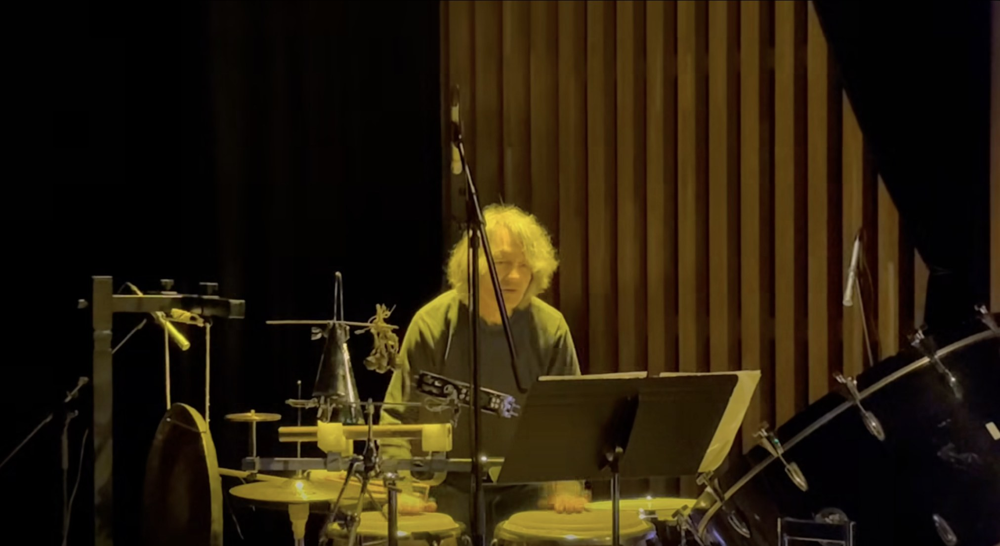

Tessellae: the small tiles of a mosaic; rhythm as tessellationTessellae: las pequeñas piezas de un mosaico; el ritmo como teselación
Small rhythmic tiles laid in time by a single performer, built on Euclidean rhythms: patterns in which events are spread as evenly as possible across a cycle. The grid is then expanded with asymmetric tuplets in threes and fives, with repetition and with silence; one or two lines sound at a time, so every gesture reads as a discrete tessera.
The live electronics use RAVE, a variational autoencoder developed at IRCAM that runs in real time, trained on percussion, which listens to the performer and reshapes the timbre in the moment. The AI does not compose: it transforms what is played, as it is played. The piece lives in the dialogue between a strict rhythmic architecture and a fluid transformation of its surface.
Pequeñas teselas rítmicas dispuestas en el tiempo por un solo intérprete, construidas sobre ritmos euclidianos: patrones en que los eventos se reparten de la manera más pareja posible dentro de un ciclo. Esa grilla se expande luego con tresillos y quintillos asimétricos, con repetición y con silencio; suenan una o dos líneas a la vez, de modo que cada gesto se lee como una tesela discreta.
La electrónica en vivo usa RAVE, un autoencoder variacional en tiempo real desarrollado en el IRCAM y entrenado con percusión, que escucha al intérprete y remodela el timbre en el momento. La inteligencia artificial no compone: transforma lo que se toca, mientras se toca. La obra vive en el diálogo entre una arquitectura rítmica estricta y una transformación fluida de su superficie.